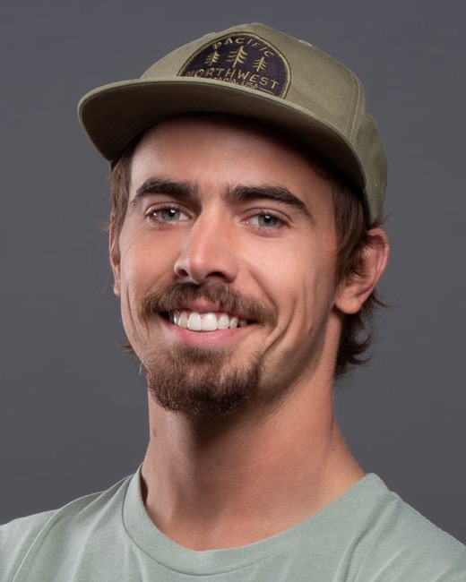
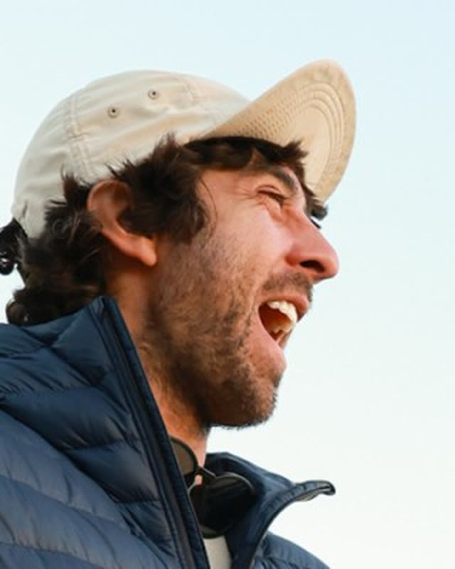

Watch the reel
Who we have worked with
Selected work
All workWhat we make
Our team
[Short note on the team and Oceanside]
Austin Faure[Role]
James Prola[Role]Brandon Means[Role]
Ashley Munson[Role]
Who we are
[A short paragraph about who we are, how we work, and why clients come back. Two or three sentences.]
[Where we came from, and the kind of work we love most.]
[How a project runs with us, who you talk to, and what working out of San Diego means.]